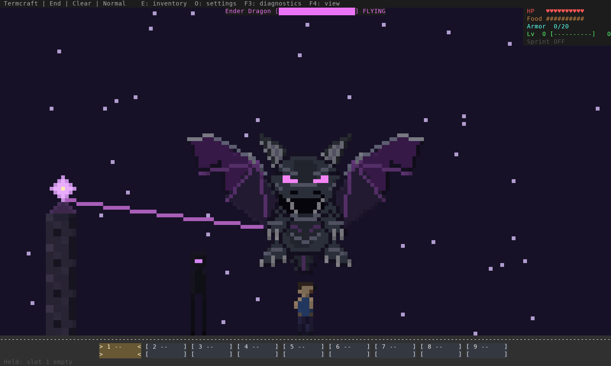

Termcraft · art preview
A dragon facing the player
A broad horned skull, paired violet eyes, projecting snout, open fanged jaw and ribbed purple wings. Compare both designs in the same End scene, at the same scale and position. The side view remains the playable default.
160×48 terminal captures. Click an image for full size. Enlarged review shows the source art more clearly; current gameplay scale shows how the design reads at the normal boss view.
Wing motion · fixed body and camera
Current side view · wing cycleFront candidate · wing cycle
Smaller terminal · 120×40